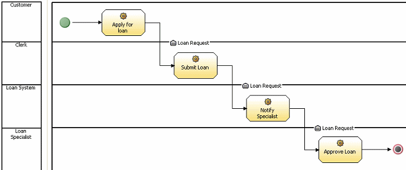
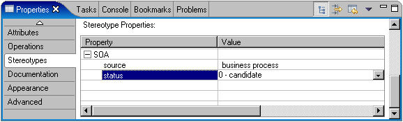
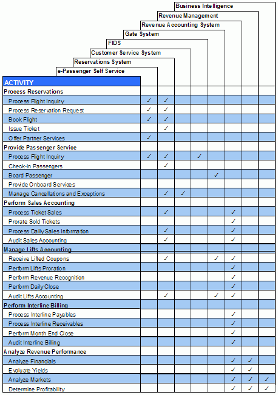

In the discussion of business alignment of services in the Guideline:
Service, the connection between business models and service identification was discussed. In general, this approach
provides a very tight connection between business stakeholders/users and the IT organization implementing services by
allowing for service operations to directly support the tasks identified in process models. In general,
business-process models focus on tasks performed by roles and/or resources in an organization to accomplish some goal,
usually to provide value in the form of product or service to an external party such as a customer or partner. The
overall process is therefore an ordered set of such tasks, possibly decomposed into sub-processes. It has associated
organization, resource, and data models to capture all aspects of the process including not only performing roles, but
required/used resources, ownership of resources, accountability, definitions of items passed into and out of tasks, and
so on. The Concept: Business Process Decomposition describes how we reach a level of
description of a business process model at which it is possible to identify candidate services, as shown in the example
below. Depending on the level of granularity of the Artifact: Business Use Case Model, it may be necessary to refine the business use-cases, to be able to reach the level of decomposition
at which a useful process model can be produced.
The following demonstrates a very simple process model using the IBM WebSphere Business Integration Modeler.

In this case, each horizontal swimlane represents a particular role performing tasks in the process. The process starts
with the green circle, ends with the red outlined circle, and does have data flowing between some tasks (in the form of
a loan request). This process, while obviously trivial and contrived, does demonstrate the high level of tasks. They
may be atomic actions from a business point of view, but obviously would require a number of steps when decomposed to
the IT level. In general, in object-oriented development of component based development, we would then treat each
individual task from the business view as a use case at the IT view and decompose into sets of components and classes
to form the implementation of the use case.
In a service-oriented solution, the service is identified at a similar level of granularity. It is commonly assumed
that the operations on a service specification will correspond 1:1 with the atomic tasks identified in a business
process model. While this is an attractive approach and may, if carefully done, achieve the right results, it also
tends to lead to the assumption that such once services are identified, they may be directly implemented as they are
described in the process model. Specifically each role (swimlane) will become a named service with each task within the
swimlane created as an operation on the corresponding service, as can be seen in the following diagram.
What this approach fails to take into consideration is that there are non-functional requirements that affect the kind
of service to be developed, the way operations are identified on services, and so forth. The level of detail usually
captured by such tools tends not to include enough to capture security, quality of service, or manageability policies,
for example. By transforming the process into a set of candidate service specifications in a service model
provides a starting point, but should be considered only as a starting point from which further analysis is performed
before the design model is developed which describes the actual implementation. Therefore all such services should have
their status set to 'candidate', as can be seen in this view of the Rational Software Modeler property view.

Alternative Representation
Where a more document-centric format for the service model is used it may be more appropriate to capture the mapping
between process tasks and service using a tabular form. The example below demonstrates this possible format.

|